To explain the enhanced coercivity we propose the model that is a generalization of the model given in Ref. 11. Direct experimental observations of the magnetization reversal processes showed that the film remagnetization in the easy direction proceeds by domain wall nucleation and motion. Therefore, spin variations along the AF/FM interface need to be considered. We include these spin variations in equation 1 below (describing the energy density of the bilayer averaged over its thickness), which is simply an extension of eqn. 1 of Ref. 11:
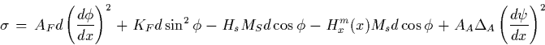
| 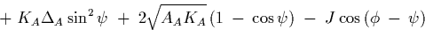 | (1) |
where AF, KF, AA, and KA are the exchange and anisotropy constants of the FM and AF layers, respectively, d is the FM thickness, 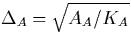 is related to the domain wall thickness in the AF layer, Hx is the external magnetic field, J is the AF/FM interfacial exchange constant and 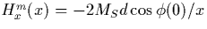 is the magnetostatic field at the FM edge. 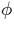 and 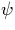 are respectively the directions of the FM layer magnetization and AF layer spin vectors with respect to the x axis (defined perpendicular to the bilayer edge).
Near the interface, if 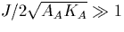 one can assume that and change coherently. The coercivity is determined from the stability criteria for non-uniform magnetization reversal modes near the film edge. For the free FM layer this yields[19]
| 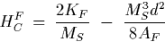 | (2) |
In a similar manner, for the AF/FM bilayer we have
| 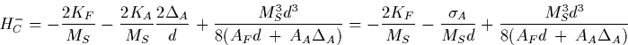 | (3) |
| 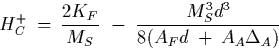 | (4) |
where HC+ and HC- are the coercivities at the magnetic field orientations parallel and antiparallel to the unidirectional anisotropy axis, respectively, and 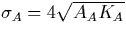. It follows that the bilayer exchange anisotropy field and coercivity are
| 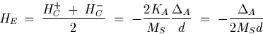 | (5) |
| 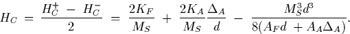 | (6) |
So the exchange shift of the hysteresis loop HE given by Eq. (6) is the same as obtained in Ref. 11. In addition, according to our model, the enhanced coercivity HC appears as a fundamental property of an AF/FM sandwich associated with spin variations along the interface. The main point of our treatment of the bilayer reversal is that we decomposed a two-dimensional spin distribution of the AF into two one-dimensional distributions: one parallel and one perpendicular to the interface. The difference between coercivities during remagnetization in opposite directions of the bilayer [see equations (3) and (4)] occurs because in one case it is necessary to overcome the energy of the spin distribution in the AF both along and across the interface. However, when a field of opposite polarity is applied there is no necessity to overcome the energy of the spin distribution perpendicular to the AF/FM interface. Moreover, the energy stored in a planar domain wall compensates for the energy cost of nucleating the spin homogeneity along the interface. Therefore the term which is proportional to 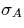 disappears from the expression for HC+ [compare Eqs. (3) and (4)]. In both cases we assume the nucleation process at the edge of the sample is due to the magnetostatic fields.
Clearly the asymmetry in the activity of the domain nucleation centers observed cannot be explained by the above model. To understand this asymmetry it is necessary to take into account local variations of the antiferromagnetic anisotropy. The physical origin for these variations is most likely crystal lattice defects. In our bilayers, due to the low magnetostriction of permalloy we neglect the anisotropy variations due to stresses around crystal defects (like dislocations) in the ferromagnet. Regions with enhanced anisotropy in the antiferromagnet play no role when the antiferromagnet does not have a Mauri-like[11] planar domain wall, but they play a crucial role when there is such a domain wall consisting of twisted spins in the NiO. The energy associated with spin twisting is of order of 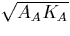. Therefore, spins at places with enhanced KA tend to untwist at a lower magnetic field similar to the untwisting of a torsional spring when the externally applied torque is relaxed. This easier spin rotation in the antiferromagnet results then in an easier local magnetization reversal in the ferromagnet. Similar asymmetry in domain nucleation has been observed earlier in the CoO/Co system.[2] We suggest that our model can explain those observations as well, thereby suggesting this phenomenon may be generic for all AF/FM bilayers.